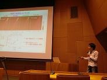
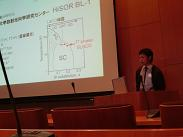
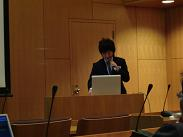
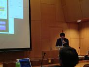
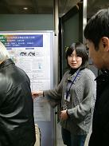

第22回日本放射光学会年会
1月9 - 12日、東京大学（本郷キャンパス）で第22回日本放射光学会年会が開催された． 当研究室から，学生5名がオーラル，ポスター・セッションに参加した．|  | 発表者：藤田 泰輔（M2） 低エネルギー放射光角度分解光電子分光によるBi2Sr1.6Ln0.4CuO6+δの面外乱れの効果の研究 |
|  | 発表者：中島 陽祐（M1） T*相銅酸化物高温超伝導体SmLa1-xSrxCuO4 の角度分解光電子分光 |
|  | 発表者：東方田 悟司（M2） 軟X 線吸収磁気円二色性分光法による単原子層制御されたCr/Fe/Cu(001)の磁性の研究 |
|  | 発表者：上野 哲朗（D1） 軟X線内殻吸収磁気円二色性分光によるPd/Fe/Pd(001)超薄膜の磁気異方性の研究 |
|  | 発表者：内海 有希（M1） 電荷密度波物質1T-TaS2の角度分解逆光電子分光 |